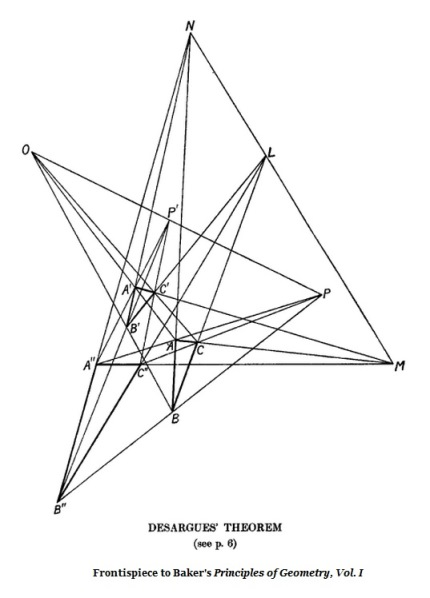

| |
Baker's
Version of Desargues' Theorem
Edited
for the Web by Steven H. Cullinane
H. F.
Baker, Principles of
Geometry, Volume
I: Foundations
Cambridge University Press, 1922
Page 6:
Desargues'
theorem.
[Actually
an aggregate of four theorems. See below.]
[Notations for points: A, B,
C; A', B', C'; P, Q, R]
If two triads of points, A, B, C and A', B',
C',
be such that the three joining lines AA', BB', CC'
meet in one point, say O,
then the two lines BC, B'C' meet, say in the point P,
and similarly the lines CA, C'A' meet, say in Q,
and the lines AB, A'B' meet, say in R,
and the three points P, Q, R are in line.
Conversely, given two triads of points, A, B, C and A', B', C',
such that the lines BC, B'C' intersect, say in P,
that the lines CA, C'A' intersect, say in Q,
and that the lines AB, A'B' intersect, say in R,
while P, Q, R are in line,
then the lines AA', BB', CC' cointersect.
[PROOF]
It is supposed that the points A, B, C are not in line,
so that they determine a plane, and similarly that A', B', C' determine
a plane.
[Case
1: Different planes]
Take first the case when these planes are different.
Suppose further that no one of the joins BC,
CA,
AB is in the plane A'B'C',
and no one of the joins B'C', C'A', A'B' is in the plane ABC.
Then the fact that the lines BB', CC' intersect
involves that the points B, B', C, C' are in one plane,
and hence that the lines BC, B'C' meet.
[Definition
of points P, Q, R
]
Their point of intersection, say P,
lies then on BC which is in the plane ABC,
and on B'C' which is in the plane A'B' C',
so that P lies on the line of intersection of these two planes.
The point, Q, of intersection of the lines CA, C'A', similarly found,
as well as the point, R, of intersection of the lines AB, A'B',
are equally on the line of intersection of the planes ABC, A'B'C'.
So that the former
statement made is clearly true.
Conversely if the lines BC, B'C' meet in
the
point P,
while CA, C'A' meet in Q and AB, A'B' meet in R, then,
still assuming the planes ABC, A'B'C' to be different,
and assuming that no one of the lines BC, B'C', CA, C'A', AB, A'B'
is common to both planes, the points P, Q, R are evidently
in the line of intersection of these planes.
The fact that the lines BC, B'C' intersect,
involves that
the lines BB' and CC' intersect, while similarly
the line AA' intersects both of these.
Now the lines BB', CC' determine a plane,
and the line AA' does not lie in this plane,
since we have assumed that the planes ABC, A'B'C' are different;
wherefore the line AA' meets this plane in a point
and can only intersect both BB' and CC' by passing through their
Page 7:
point of intersection.
Thus
the lines AA', BB', CC' meet in a point, as we desired to
shew.
We have explicitly excluded, for
the
sake of simplicity,
the possibility of one of the six lines BC,... lying in both planes,
which is easily seen to be unimportant.
Incidentally we see that if
three
lines be
such that every two of them have a common point,
then the three lines lie all in one plane,
or pass through one point.
[Case
2: One plane]
Next suppose the two triads A,
B, C
and A', B', C' to be in one plane,
it being assumed as before that
A, B, C are not in line and A', B', C' are not in line.
[Definition
of points O, P, P']
Then, first, let the lines AA',
BB',
CC' meet in one point, O.
Draw through O any line not
lying in
the plane of the two triads,
and let P, P' be any two points on this line.
[Definition
of points A", B", C"]
Then the intersecting lines AA'O and PP'O
determine a plane,
and the lines AP, A'P', lying therein, intersect in a point, say A".
Similarly the lines BP, B'P' meet in a point, say B",
and the lines CP, C'P' meet in a point, say C".
As P is not in the plane of ABC, A'B'C', it is clear that
the points A", B", C" are not in this plane;
further A", B", C" are not in line, since otherwise,
as the plane containing this line and P
would contain the points A, B, C, these would be in line;
finally the plane which is thus determined by the points A", B", C"
does not contain, for instance, the line AB,
for otherwise the plane of AB and A"B",
which contains P, would contain C" and C,
and A, B, C would be in line.
[Definition of points L, M, N]
Hence it follows from what is proved above,
as the lines AA", BB", CC" meet in P,
that there is, in the plane of ABC and A'B'C', a line,
where this plane is met by the plane A"B"C",
and upon this line three points, say L, M and N,
such that the lines BC, B"C" meet in L,
the lines CA, C"A" meet in M
and the lines AB, A"B" meet in N.
The point L is then the point where
the plane of ABC and A'B'C' is met by the line B"C",
and M, N are similarly the points where
this plane is met by C"A" and A"B".
By considering that the three lines A'A", B'B", C'C" meet in the point
P',
we prove however, in the same way, that B'C' passes through L,
and that C'A', A'B' respectively pass through M and N.
We have thus proved
that if two triads of points ABC, A'B'C', in the same plane,
be such that the joining lines AA', BB', CC' meet in a point,
then the three points of intersection
(BC, B'C'), (CA, C'A'), (AB,
A'B') are in line.
Conversely,
for two triads of points ABC, A'B'C' in the same plane,
assume that the three points
(BC, B'C'), (CA, C'A'), (AB, A'B') are in
line.
[Definition of points L, M, N for the converse]
Denote these points respectively by L, M, N.
Draw through the line LMN a plane,
other than the original plane of ABC, A'B'C';
draw through the points L, M, N, in this new plane, respectively
the lines LB"C", MC"A", NA"B", giving by their intersections
a further triad A", B", C" in this new plane.
This new plane does not contain any one of the lines BC, CA, AB, B'C',
Page
8:
C'A', A'B', and it
is
supposed that the lines LB"C", MC''A", NA"B"
are all drawn so as not to lie in the original plane of ABC, A'B'C'.
Then, as the lines BC, B"C" meet in the point L,
the lines CA, C"A" meet in the point M,
and the lines AB, A"B" meet in the point N,
[Definition of points O, P, P' for the converse]
it follows from what has preceded that
the three lines AA", BB', CC" meet in a point, say P,
which does not lie in either the original plane or the new plane.
It follows similarly, as the lines B'C', B"C" meet in the point L,
and C'A', C"A" in M, and A'B', A"B" in N,
that the lines A'A'", B'B", C' C" meet in a point, say P',
not lying in either of the two planes described.
Now let O be the
point where the line PP'
meets the original plane of ABC, A'B'C'.
Then, since the lines AP, A'P' intersect, in the point A",
and the points A, A', P, P' are not in line, these lines determine a
plane,
and therefore the line AA' intersects the line PP'.
This intersection can only be at O,
where the line PP' meets the original plane containing A and A'.
Thus the line AA' passes through O,
as, similarly, do also the lines
BB' and CC'.
We have thus proved
that if two triads ABC, A'B'C',
of points in one plane, neither triad being in line,
be such as to have three intersections
(BC, B'C'), (CA, C'A'), (AB, A'B') lying in line,
then the three joining lines AA', BB', CC' meet in a point.
The
aggregate of the
four
theorems now established
will be referred to as Desargues' theorem.
|

|